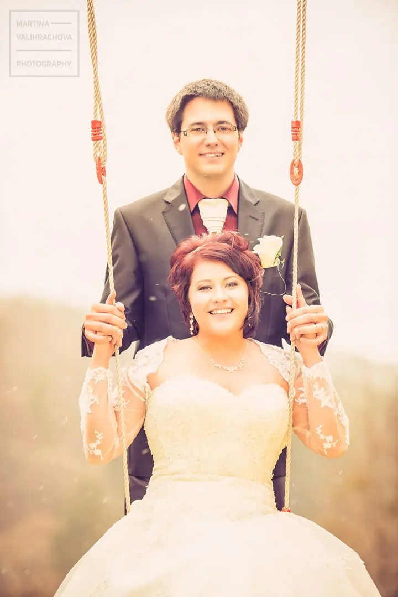
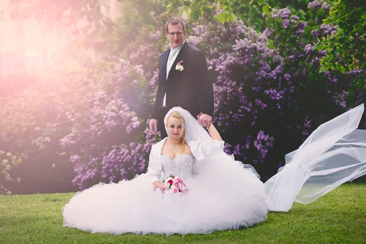
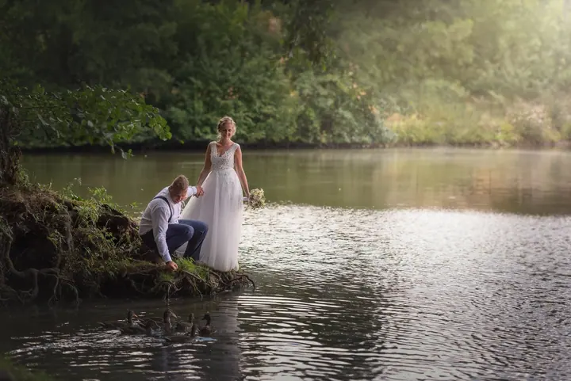
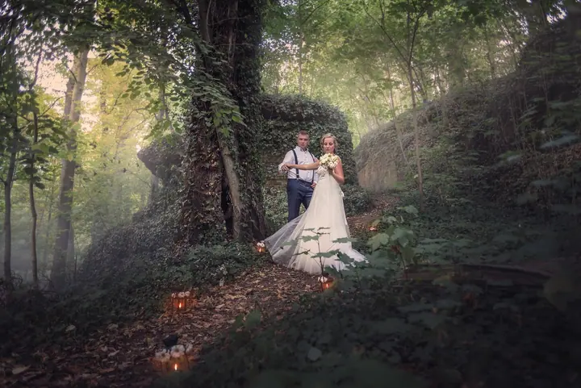

jedna
Svatební focení
Celodenní focení od ranních příprav nevěsty přes obřad, gratulace a skupinové fotky až po večerní party. Pokud nechcete celý den, vyberte si jednu ze dvou variant půldenního focení.


Jmenuji se Martina Valihrachová a fotím svatby. Celý den dokumentuji citlivě a v reportážním duchu, ale nejvíc mě baví hrát si s focením novomanželů na místech, která skrývají spoustu překvapení.
Více o mně
Co fotím
jedna
Celodenní focení od ranních příprav nevěsty přes obřad, gratulace a skupinové fotky až po večerní party. Pokud nechcete celý den, vyberte si jednu ze dvou variant půldenního focení.
dvě
Párové fotky v klidu, bez rušení a stresu. Hodí se pro vás, pokud se chcete ve svatební den věnovat hlavně hostům.
Konec svatby je pro vaše fotky jen půlka cesty

Za objektivem
Fotím, protože mě to baví, ne proto, že musím. Svatební den je ve vašem životě něco výjimečného a já vám z něj chci uchovat vzpomínku tak krásnou a živou, abyste se k albu rádi vraceli i po letech.
Každá svatba má svou atmosféru. Dává jí ji místo i styl, ale hlavně vy. Průběh dne zachycuji nenápadně, jako reportáž. Na portrétech novomanželů si dávám obzvlášť záležet a ráda při nich využívám všechno, co nám lokace nabídne.
Konec svatby je pro vaše fotky teprve půlka cesty. Syrová fotka z fotoaparátu je jako polotovar, ze kterého se teprve vybrousí diamant. Proto se na každou svatbu pečlivě připravuji a stejnou péči pak věnuji i úpravě vybraných fotografií.
Martina
Napište mi, co si představujete, nebo zavolejte. Pokud vám žádný z balíčků úplně nesedí, připravím vám nabídku na míru.
Termín je pevně váš po podpisu smlouvy a zaplacení zálohy. Rezervaci vám potvrdím co nejdřív.
Fotím podle zvoleného balíčku, od intimních ranních příprav přes obřad až po portréty novomanželů a večerní party.
Vybrané fotky pečlivě upravím, aby z nich byla vzpomínka, ke které se budete rádi vracet.
Portfolio
Otázky
Celodenní focení začíná ranními přípravami a končí během večerní party. Půldenní má dvě varianty: buď od rána po portréty novomanželů, nebo od příjezdu na obřad přes hostinu až po večerní party.
Rezervace svatebního termínu platí po uzavření smlouvy a složení zálohy.
Ano. Když vám standardní balíčky nebudou vyhovovat, ráda vám připravím nabídku na míru a domluvíme se na individuálních podmínkách.
Je to ideální volba, pokud se chcete ve svatební den věnovat hostům nebo budete mít hodně starostí se zařizováním. Párové fotky tak vzniknou v klidu, bez rušení a stresu.
Napište pár vět o tom, co si představujete. · +420 737 919 251